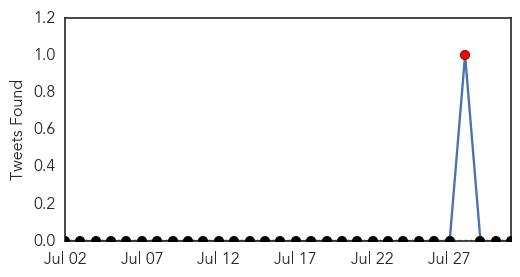
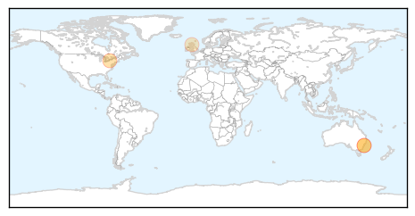

30 Day Trends
Web: 0 alerts, 0 warnings
Twitter: 1 alerts, 0 warnings
Top Articles:
- 0.993
- Before Legionnaire’s: A Brief History of NYC Outbreaks
- 0.951
- Sydneysiders look out for symptoms of meningococcal disease after university student diagnosed
- 0.951
- Sydneysiders look out for symptoms of meningococcal disease after university student diagnosed
- 0.729
- Argyll News: New meningitis vaccination programme for 14-18 year olds starts today in ScotlandFor Argyll
Top Tweets:
-
No tweets found for Jul 31, 2015
Web/News Articles

Tweets
Article Locations
Article Confidences